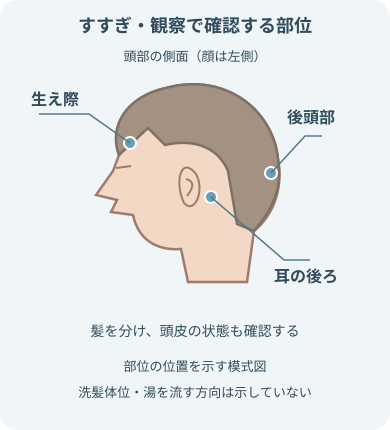

注意事項
実施前
- 安静度と洗髪の可否を確認
- 実施前に確認する全身状態
- 意識
- 呼吸
- 循環
- 発熱
- 疲労
- 疼痛
- 実施前に確認する頭頸部の制限・配慮
- 頸部の屈曲・伸展制限
- 頭頸部の創傷・手術
- 頭蓋内圧への配慮
- 実施前に確認する機器・創部
- 点滴
- 酸素
- ドレーン
- モニター
- 創部
- 実施前に確認する頭皮の状態の例
- 創傷
- 発赤
- 湿疹
- 感染
- 出血
- 医療用接着剤
- 患者が行える動作は本人に任せる
実施中・実施後
- 頸部を過伸展させない
- 次の変化があれば洗髪を中止する
- 呼吸苦
- めまい
- 悪心
- 冷汗
- 顔色不良
- 疼痛
- 湯温は患者と実施者の双方で確認
- 湯・洗浄剤の流入を防ぐ部位
- 眼
- 耳
- 気道
- シャンプーが残らないようにすすぐ
- 濡らさないもの
- 寝衣
- 寝具
- 医療機器
- 頭皮と毛髪を十分に乾かし、冷えを防ぐ
目的
- 頭皮・毛髪から除去するもの
- 汚れ
- 汗
- 皮脂
- 軽減を目指すもの
- 掻痒感
- 不快感
- におい
- 頭皮と毛髪の状態を観察
- 爽快感と整容を支援
- 患者の生活習慣と希望を尊重
観察項目
- 全身状態の観察
- 意識
- 呼吸
- 脈拍
- 顔色
- 発汗
- 患者の訴え・症状の観察
- めまい
- 悪心
- 倦怠感
- 疼痛
- 寒さ
- 頭皮の観察
- 発赤
- 湿疹
- 傷
- 出血
- 腫脹
- 圧痛
- 頭皮・毛髪の清潔状態の観察
- 掻痒感
- 落屑
- 皮脂
- におい
- 汚れ
- 毛髪の観察
- 脱毛
- 切れ毛
- 毛髪の絡まり
- 頸部・体位の観察
- 頸部痛
- 可動域
- 体位による苦痛
- 位置と作動を確認する機器の例
- 点滴
- ドレーン
- 酸素機器
- 洗髪後の観察
- 爽快感
- 疲労
- 冷え
必要物品
- 洗髪槽またはケリーパッド
- 排水用ホース
- 排水用バケツ
- 防水シート
- バスタオル
- フェイスタオル
- 洗髪用ボトルまたはピッチャー
- 湯を入れる容器
- シャンプー
- 必要時、コンディショナー
- 眼・耳を保護するガーゼまたはタオル
- 手袋
- くしまたはブラシ
- ドライヤー
- ごみ袋
- 取扱説明書を確認する製品
- 洗髪槽
- 排水ホース
- 洗浄剤
- 感染対策が必要な場合は個人防護具と物品の処理方法を追加する。
ベッド上洗髪の手順
- 患者と実施条件を確認実施前の確認
- 洗髪の可否
- 安静度
- 体位
- 頭皮
- 医療機器
患者へ流れを説明する。
- 環境と物品を整える調整する環境
- 室温
- プライバシー
- ベッドの高さ
排水用バケツを安定した低い位置へ置く。
- 毛髪を整える
毛髪の絡まりを毛先からほどく。
確認するものの例- 整髪料
- 義髪
- 留め具
- 体位を整える
- 仰臥位を基本に、頭部をベッドの端へ寄せる。
- 必要に応じて膝を軽く曲げ、頸部と腰部の緊張を減らす。
- 防水と排水経路を準備
- 肩から頭部の下へ防水シートとタオルを敷く。
- 洗髪槽を置き、排水ホースをバケツへ確実に入れる。
- 湯温を確認
- 患者の好みと皮膚状態を確認。
- 少量の湯をかけて温度と体調を再確認する。
- 毛髪を濡らす
- 眼と耳を保護。
- 生え際から後頭部へ少量ずつ湯を流し、顔側への流入を防ぐ。
- 洗う
- シャンプーを泡立て、指腹で頭皮を洗う。
- 爪を立てず、創傷や発赤部へ強い刺激を加えない。
- すすぐ十分にすすぎながら確認する部位
- 生え際
- 耳の後ろ
- 後頭部
洗浄剤の残りと排水状態を確認する。
- 洗髪槽を外す
- 毛髪の水分をタオルで押さえる。
- 排水をこぼさないように洗髪槽と防水シートを外す。
- 乾燥・整容
- タオルで頭皮と毛髪の水分を取る。
- ドライヤーは温度と距離に注意し、頭皮まで乾かす。
- 毛髪を整える。
- 体位・環境を戻す終了時に確認するもの
- 寝衣
- 寝具
- 医療機器
安楽な体位へ戻し、ベッド周囲を整える。
- 観察・記録実施後に記録する項目
- 実施方法
- 頭皮・毛髪の状態
- 患者の反応
- 異常
- 実施後の疲労
- 頸部を過伸展させない。
- 排水ホースで防ぐこと
- 屈曲
- 抜け
- 逆流
関連知識
方法を選ぶ視点
- シャワー・洗面台
- 離床でき、座位・立位を安全に保てる場合。
- 患者の自立動作を活かす。
- ベッド上洗髪
- 離床できないが、仰臥位と頸部の位置を安全に保てる場合。
- 洗髪車・移動式機器
- 専用機器を使用できる場合。
- 取扱説明書と院内の洗浄・消毒手順を確認。
- ドライシャンプー等
- 全身状態や治療上の制限で湯を使う洗髪が難しい場合。
- 頭皮状態と製品表示を確認。
安楽を保つポイント
- 体位による苦痛をこまめに確認
- 呼吸苦
- 頸部痛
- 腰痛
- 必要に応じて膝を軽く曲げ、下肢と腰部を支える
- 長時間同じ体位にしない
- 患者の希望を確認する項目の例
- 湯温
- 洗い方
- 香り
- 露出を少なくし、冷えを防ぐ
- 疲労が強い場合は工程を短縮または中止
頭皮を観察する視点

- 頭皮の損傷・炎症を観察する項目
- 発赤
- 腫脹
- 傷
- 出血
- 圧痛
- 頭皮表面の観察
- 湿疹
- 落屑
- 痂皮
- びらん
- 頭皮の清潔・乾燥状態の観察
- 皮脂
- 乾燥
- におい
- 掻痒感
- 毛髪の観察
- 脱毛
- 切れ毛
- 毛髪の絡まり
- 医療処置に関連する頭皮の観察
- 医療用接着剤
- 電極跡
- 圧迫部位
- 異常がある部位は強くこすらず、共有・記録